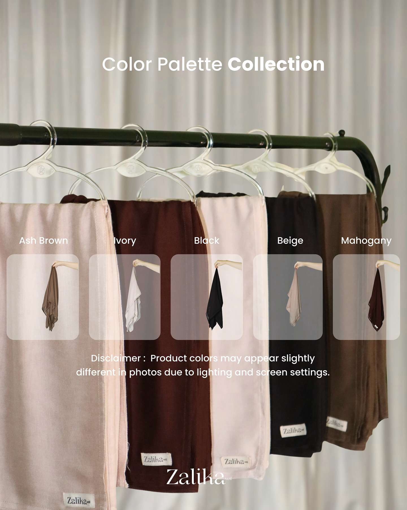
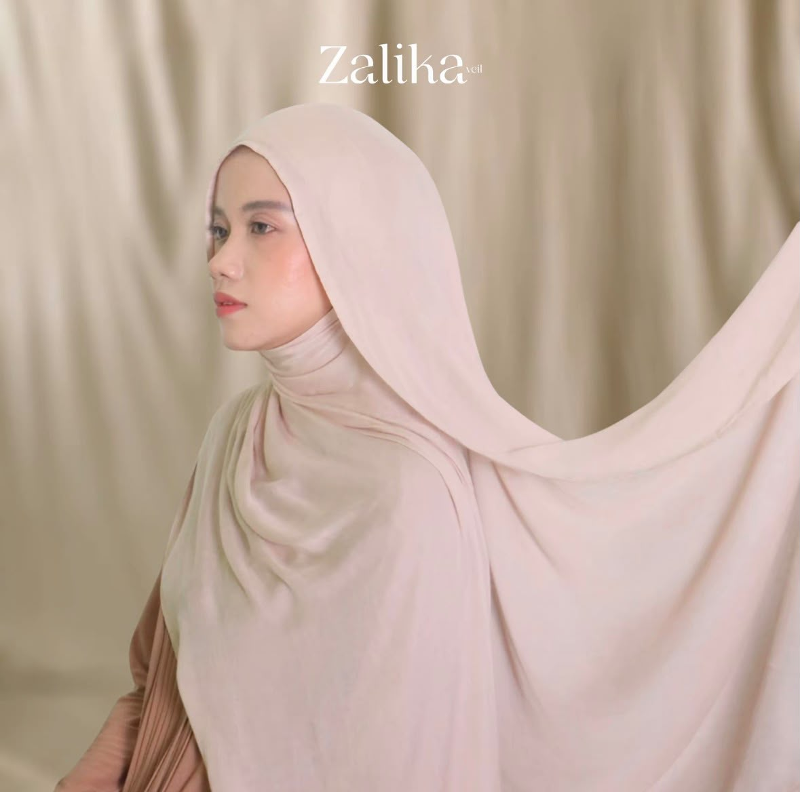
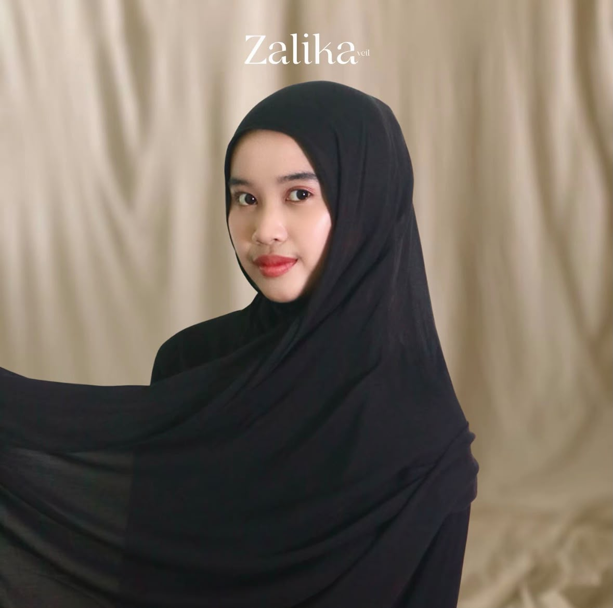
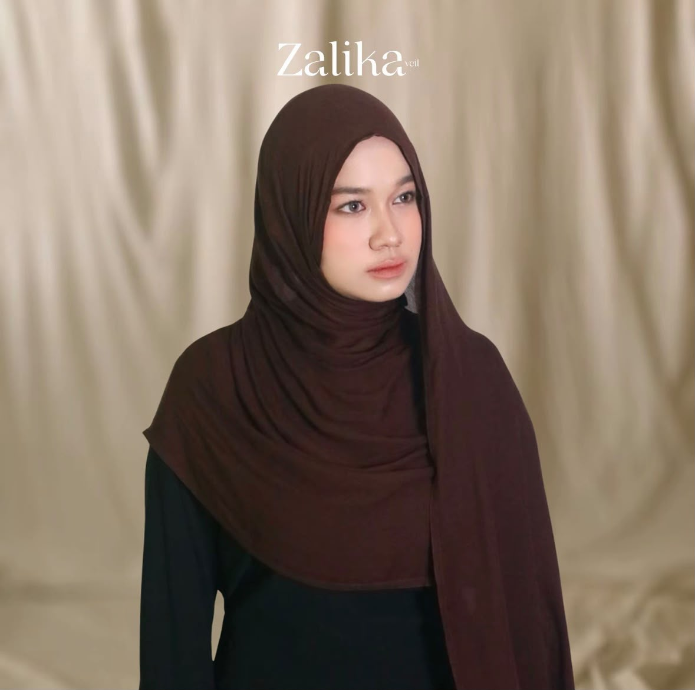
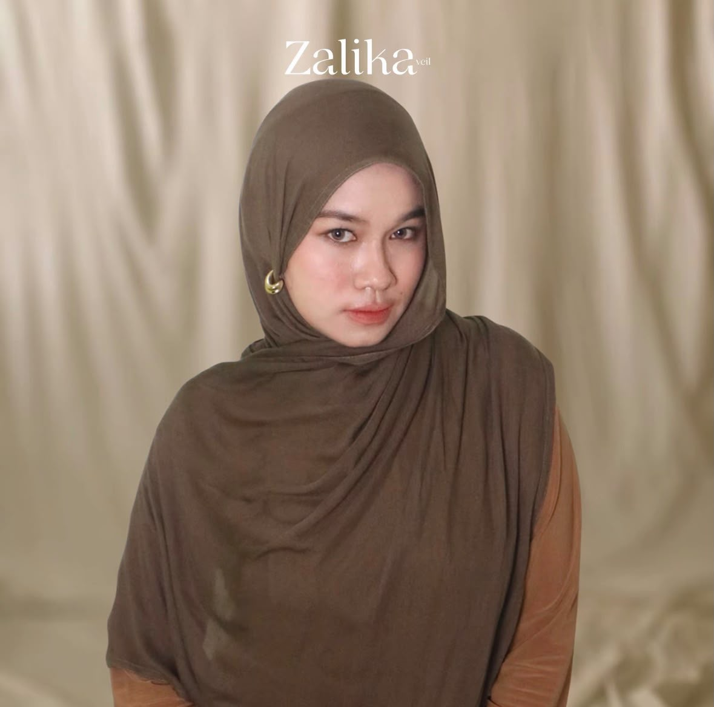
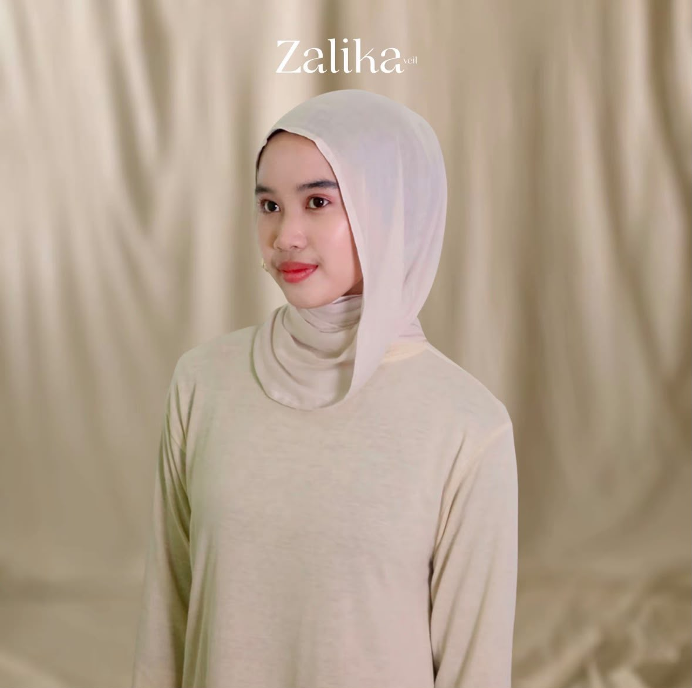

Pilihan warna kami

Tentang warna kami
Setiap warna punya karakter masing-masing. Lewat koleksi ini, kami menyediakan warna yang timeless, elegan, dan mudah dipadukan untuk dipakai sehari-hari.
Dibuat untuk kamu yang suka tampilan sederhana, nyaman, dan tetap anggun. Pilih warna favoritmu dan tampil dengan gayamu sendiri.
Pilihan warna

Beige hangat dan lembut dengan kesan natural dan feminin. Cocok untuk kamu yang suka tampilan simpel dan minimalis.

Hitam selalu jadi pilihan yang aman. Kesannya tegas dan berkelas, serta mudah dipadukan dengan outfit apa saja.

Cokelat tua dengan nuansa hangat. Kesannya elegan dan dewasa, pas untuk tampilan yang lebih berkarakter.

Cokelat dengan sentuhan abu-abu yang terlihat tenang dan modern. Cocok untuk tampilan earthy yang tetap stylish.

Putih lembut dengan nuansa hangat. Terlihat bersih dan anggun, memberi kesan segar pada penampilan.
Warna timeless untuk semua gaya